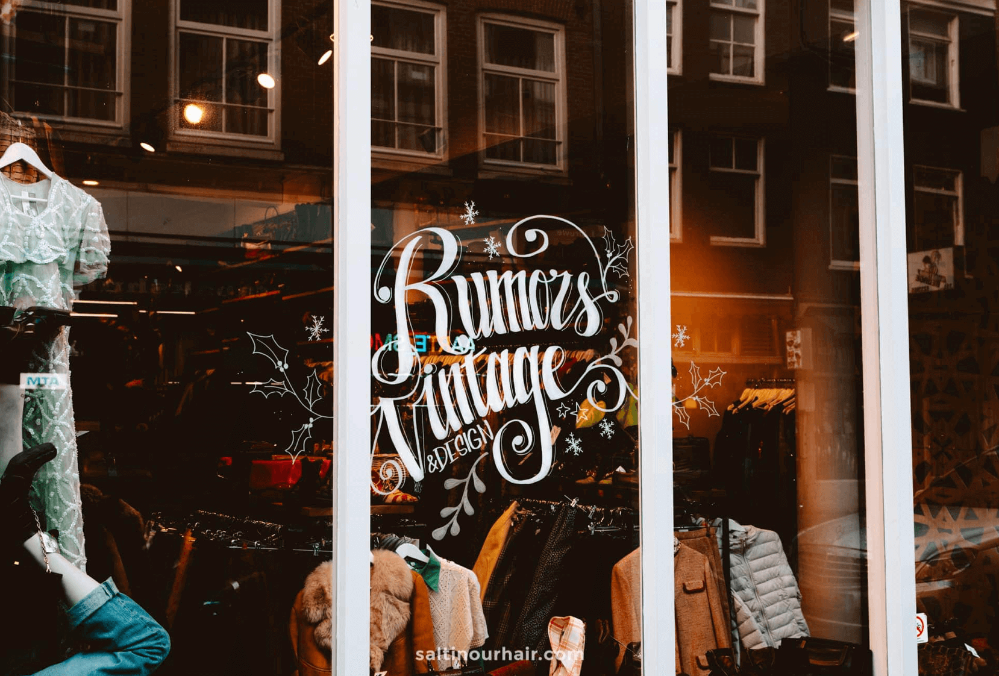
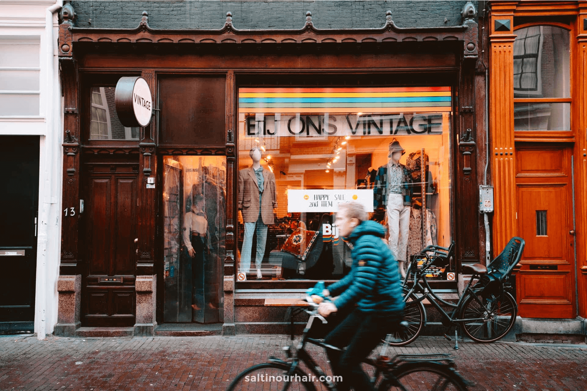
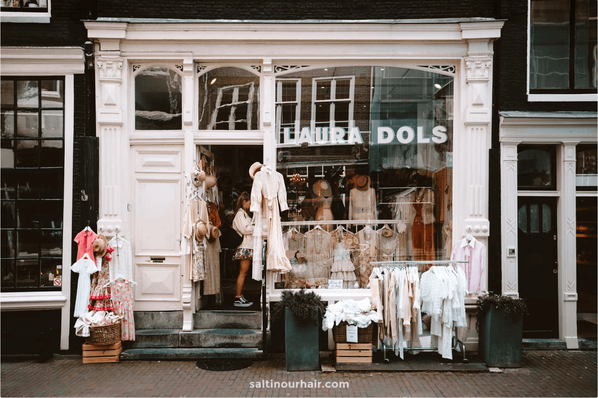

Rumors Vintage & Design
Deze kleurrijke boetiek is maar een paar minuten lopen vanaf Amsterdam Centraal Station en is een echte schatkist vol vintage kleding. Het is er overzichtelijk, de kleding is op soort en kleur gecategoriseerd en het wordt elke dag bijgevuld. De items bij deze vintage winkel in Amsterdam zijn niet de goedkoopste, maar elk stuk is super uniek en van goede kwaliteit.
Locaties: Haarlemmerstraat 29 & Haarlemmerstraat 99, Amsterdam

Bij Ons Vintage
Deze prachtige vintage winkel in Amsterdam is een veel voorkomend favoriet van mensen. Het heeft twee retro look winkels in Amsterdam en biedt een uitgebreide collectie toffe jeans, sweaters en overhemden. Noem het maar op en het zal er zijn, allemaal gecategoriseerd op kleur. Deze winkel is een lust voor het oog, dus ga lekker op zoek naar die perfecte Levis Jeans voor een redelijk kleine prijs.
Locaties: Reestraat 13, Nieuwezijds Voorburgwal 150, Amsterdam

Laura Dols
Laura Dols is eigenlijk gewoon de kast van een sprookjesprinses! Als je op zoek bent naar een unieke vintage feestoutfit, dan ben je hier aan het juiste adres. Sprankelende jurken, glitter tassen, elegante hoedjes, ze hebben het allemaal!
Locatie: Wolvenstraat 7, Amsterdam